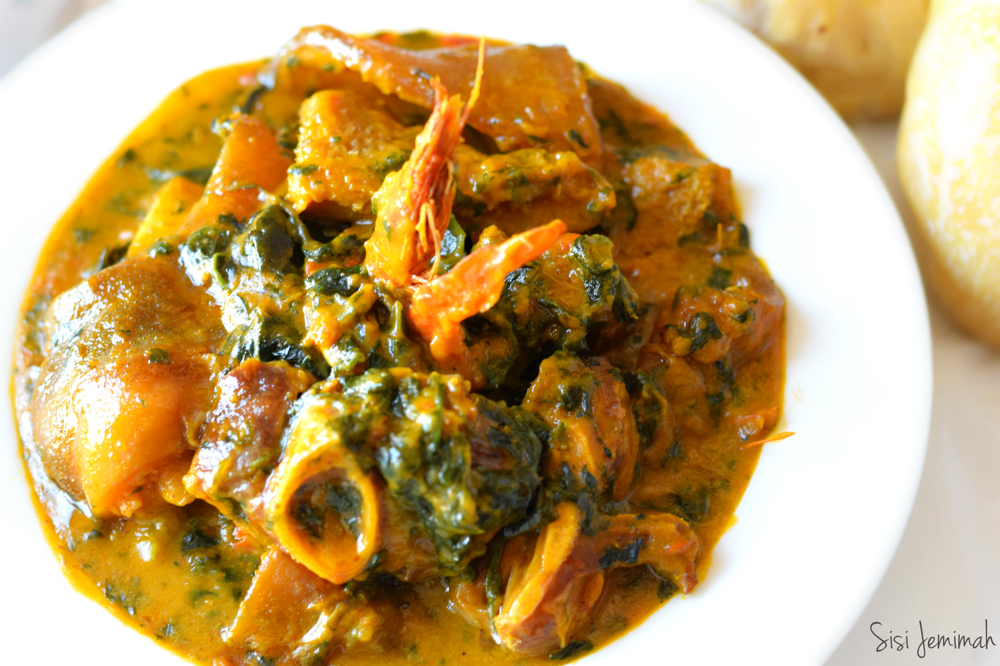

Igbo Bitter Leaf Soup

A sumptous meal best served with pounded yam
Bitter Leaf soup is one of the most traditional soups in Nigeria.
It is native to the Igbos of Eastern Nigeria and most Igbos will tell you that this is their favourite soup in the World.
Ingredients
- Washed and squeezed bitterleaf.
- Assorted beaf and Fish
- Pepper, Salt and Ground Crayfish
Recipe Instructions
- Boil the beef and fish in one litre of water until they are well done.
- When the beef is done, add two cubes of maggi and cook for five minutes.
- Add pepper, ground crayfish and bitter leaf and cook for ten minutes.
- Add palm oil and cocoyam paste in small lumps.
- Cover the pot and leave to cook on high heat until the cocoyam paste have dissolved.
- Add Salt to taste and the soup is ready.
Return to top
Return to main page